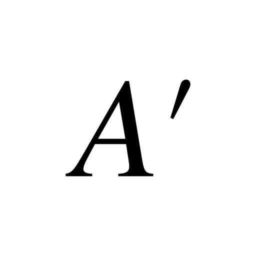
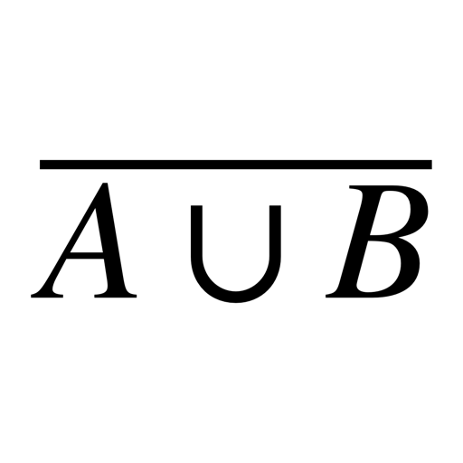

\begin{cases}
\ A \\
\ B
\end{cases}
\]

\left[ \begin{aligned}
\ A \\
\ B
\end{aligned}
\right.
\end{equation}

\left[ \begin{aligned}
\ A \\
\left\{ \begin{aligned}
\ B \\
\ C
\end{aligned}
\right.
\end{aligned}
\right.
| Operation | Result | LaTeX code |
|---|---|---|
| Intersection | \cap | |
| Union | |
\cup |
| Empty set | |
\emptyset |
| Element of | \in | |
| Not element of | |
\notin |
| Subset of | |
\subset |
| Not subset of | |
\nsubset |
| Symmetric difference | \Delta | |
| Complement | |
\overline A |
| Complement |  | A' |
| For all | |
\forall |
| Exists | |
\exists |
| Cardinality | |
|A| |
| Intersection of A and B | |
A \cap B |
| Union of A and B | A \cup B | |
| A without B | |
A \backslash B |
| A without B (with added spaces) | |
A \ \backslash \ B |
| Complement to the union of A and B |  | \overline {A \cup B} |
| Intersection of A and B | |
\[ \begin{cases} \ A \\ \ B \end{cases} \] |
| Union of A and B | |
\begin{equation} \left[ \begin{aligned} \ A \\ \ B \end{aligned} \right. \end{equation} |
| Union of A and Intersection of B and C | |
\begin{equation} \left[ \begin{aligned} \ A \\ \left\{ \begin{aligned} \ B \\ \ C \end{aligned} \right. \end{aligned} \right. |